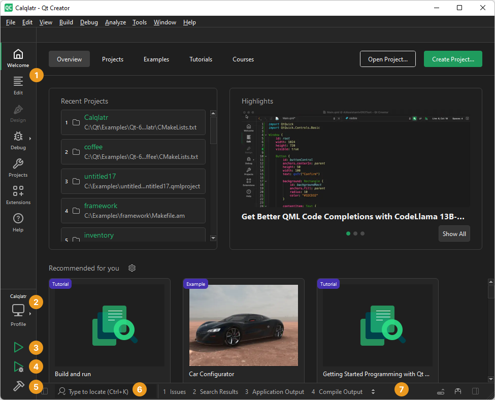

User interface
The first time you start Qt Creator, it asks you about your level of experience as a developer and the platforms you develop applications for.
Qt Creator sets the contents of the Overview tab based on your answers.

The following table describes the parts of the UI that are visible in all Qt Creator modes.
| Number | UI Control | Purpose | Read More |
|---|---|---|---|
 | Mode selector | Perform a particular task, such as designing the UI, writing code, or debugging the application. | Switch between modes |
 | Kit selector | Select the appropriate kit for building the project and running it on particular hardware. | Activate kits for a project |
 | Run button | Run the application on the selected target platform. | Run on many platforms |
 | Debug button | Debug the application on the selected target platform. | Debugging |
 | Build button | Build the application using the selected kit. | Build for many platforms |
 | Locator | Find a particular project, file, class, or function. | Navigate with locator |
| Output | View output from building, running, and other actions. | View output |
To see where the above controls are in the UI, select Help > UI Tour.
Take courses at Qt Academy
To learn more about the parts of the UI and the Welcome mode, take the Qt Academy: Getting Started with Qt Creator course.
To enroll to a course, go to Courses, and then select a course in the list.
What's new?
For information about new features and bug fixes in each Qt Creator release, select Help > Change Log.
See also How To: Use the UI and Reference.